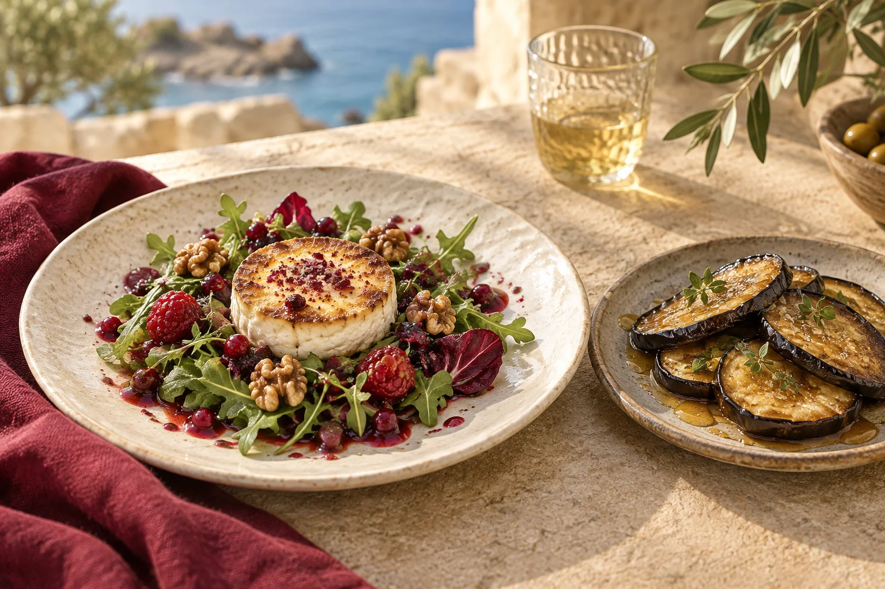

01
Ensaladas
Ensalada de queso de cabra caramelizada, nueces y vinagreta de frutos rojos
12.90 €Ensalada de salmón ahumado, aguacate y queso feta con vinagreta de lima
14.90 €Ensalada de aguacate, mango y langostinos con vinagreta de mostaza
14.90 €Ensalada de tomate, pesto, brioche crujiente y queso mozzarella
8.90 €
02